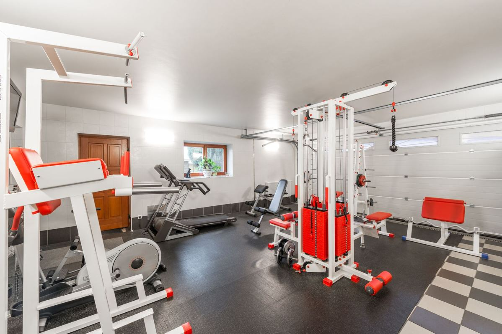

The treadmill went upstairs in a box and it is not coming down in one. Home gym removal in North Texas is almost always a stairwell problem before it is a weight problem, because the bonus room over the garage is where these houses put the gym. We take it apart where we can, carry it where we cannot, and the walls and the stair rail stay where they are.

That last part is the whole reason people call instead of borrowing a truck.
Why the bonus room is the hard part
Newer houses in the northern suburbs almost all have the same shape upstairs: a game room or bonus room over the garage, reached by a staircase that turns partway up. Whoever built the house got the equipment up there before the handrail went on, or carried the pieces up separately out of the shipping boxes and assembled them in the room.
Coming down is a different job. The turn in the staircase is the constraint, not the total weight. A treadmill deck that is longer than the stair landing is deep cannot pivot, and forcing it is how a handrail gets pulled off the wall or a corner of drywall gets punched out. The same thing happens at bedroom doors, at the top of the stairs where the ceiling drops, and in older Plano houses where the stairwell is narrower than anything built in the last fifteen years.
So the first question we ask is not what the equipment weighs. It is what the stairs look like, and whether the front door or a back slider is the better exit once we get to the bottom. That path-out-of-the-house thinking is the same approach we take with couches and armoires, covered in old furniture removal and getting it out.
What comes apart, and what does not
Most home gym equipment is more modular than people expect, and knowing which category a machine falls into changes the whole job.
Treadmills. Most fold, and on most of them the uprights come off the deck with bolts at the base. Once the console and uprights are off, the deck is a long flat piece that two people can walk down a staircase. Belt-drive motors sit under a plastic hood at the front and add weight at one end, which matters for who walks backward down the stairs.
Ellipticals and rowers. These break down further than anything else. The arms, pedals, and flywheel housing usually separate into three or four manageable pieces.
Stationary bikes and the connected-screen ones. The screen comes off first, always, before anything else is touched.
Adjustable benches and folding racks. Bolts and pins. These come apart fast.
Power racks, Smith machines, and cable machines with a weight stack. These do not come apart the way the rest of it does. A cable machine's stack is a column of solid plates in a frame, and the frame itself is welded steel that was bolted together in the room. It comes apart in the reverse order it went together, and it is a real disassembly, not a lift.
One-piece welded frames. Some older equipment has no bolts anywhere. That one gets carried whole or it does not leave, and we will tell you which on the walkthrough rather than after we have started.
Do not drag it to the top of the stairs before we get there. People do this to be helpful, and a treadmill parked on the landing is in the exact spot the crew needs to stand to work the turn. Leave it where it sits. Getting it to the stairs is part of what we are there to do.
Weight plates, dumbbells, and rubber flooring
The free-weight side of a home gym is a different problem than the machines, because it is dense.
Iron and bumper plates, dumbbell sets, kettlebells, and the loaded bar are compact and heavy for their size, and dense material gets handled differently on our end than a load of furniture. It is not a problem, it is just something we want to know about before the crew shows up, so mention the weights when you call rather than letting them turn up under a blanket.
Rubber gym flooring is its own item. The interlocking tiles come up easily. Rolled rubber that was glued to the subfloor does not, and pulling it up can take the finish with it. If the room is going back to carpet anyway that does not matter, and if it is not, it is worth knowing before somebody starts prying.
Horse stall mats, which a lot of home gyms use, are heavy for their footprint and are usually easier to walk out one at a time than to try to roll.
Where a used treadmill actually goes
Used cardio equipment is one of the harder categories to donate, whatever the internet tells you about it. Most charity resale operations will not take equipment with a motor and a control board they cannot test or repair, and liability is the reason. Habitat for Humanity ReStore publishes what its locations accept on its donate goods page, and exercise equipment varies store to store, so the answer is a phone call to your nearest one rather than an assumption.
Free weights and simple steel racks are a much better donation candidate than anything with a motor, because there is nothing to break.
What does not get donated does not just go in a hole. A treadmill is mostly steel frame and motor, and that goes to a metal recycler. The console is electronics, and electronics have their own destination, which the EPA covers under electronics donation and recycling. Our stated goal is diverting more than half of every load away from a landfill, and separating the steel from the boards from the plastic on the way out is how that gets done rather than promised. The full walkthrough is in where your junk goes after pickup.
If it is just one machine and you can get it to the curb yourself, check the free route first. Most cities here run bulky waste collection on a published schedule, and Plano lists what qualifies at bulky waste accepted items, while Allen publishes its own rules under trash and recycling. The catch is the same one that started this page, which is that getting it down the stairs is the part nobody wants. We would rather tell you the free option exists and lose the job than take money you did not have to spend.
Plenty of these calls are really about getting a spare room usable again before company arrives. If that is the situation, see turning the spare room back into a guest room.
How the job runs
Send a photo of the equipment and a photo of the stairs. Those two pictures answer most of what we need. A crew comes out, looks at the path, and gives you a firm number before anything moves, with disposal already included. The quote is the bill.
Then two people work it. Tools come out, the machine comes apart in the room, and the pieces go down in trips instead of one bad carry. You do not lift anything and you do not spot anyone. The room and the stairs get swept before we leave. Our own crews do this, not gig labor hired off an app that morning, which is the reason we are comfortable working a staircase inside somebody's house at all.
We run pickups seven days a week across Plano, Frisco, Allen, McKinney, Richardson, Little Elm, Prosper, The Colony, Wylie and Fairview. Call before noon and the same afternoon is typical, though typical is the honest word rather than a promise. The service page for this kind of work is furniture and large item removal, and you can send us a photo whenever you are ready. What we will and will not take generally is spelled out in what junk removal will and will not take.
Frequently asked questions
Do I need to take the treadmill apart before you arrive?
No. Bring us the machine as it sits. Taking it apart in the room is part of the work, and it is usually faster with two people who have done it before.
Can you get it down a staircase that turns?
Usually yes, and the turn is exactly why the machine comes apart upstairs instead of being walked down whole. Send a photo of the stairs and we will tell you straight before we schedule.
What about the weight plates and dumbbells?
Those come too. Mention them when you call, because dense material like iron gets handled differently than furniture and we would rather plan for it than find it.
Will you pull up the rubber gym flooring?
Interlocking tiles and stall mats, yes. Rolled rubber that was glued down is a different job, because getting it up can damage the subfloor finish underneath. We will look at it and say so before starting.
Is any of it worth donating?
Free weights and simple steel racks often are. Motorized cardio equipment usually is not, because most donation centers will not accept a machine they cannot test. We check rather than assume.
Most home gyms end the same way. It got used hard for a year, then it became the most expensive clothes rack in the house, and now the room is supposed to be an office. The rest of what we haul is on the services page. There is no rush on our end.